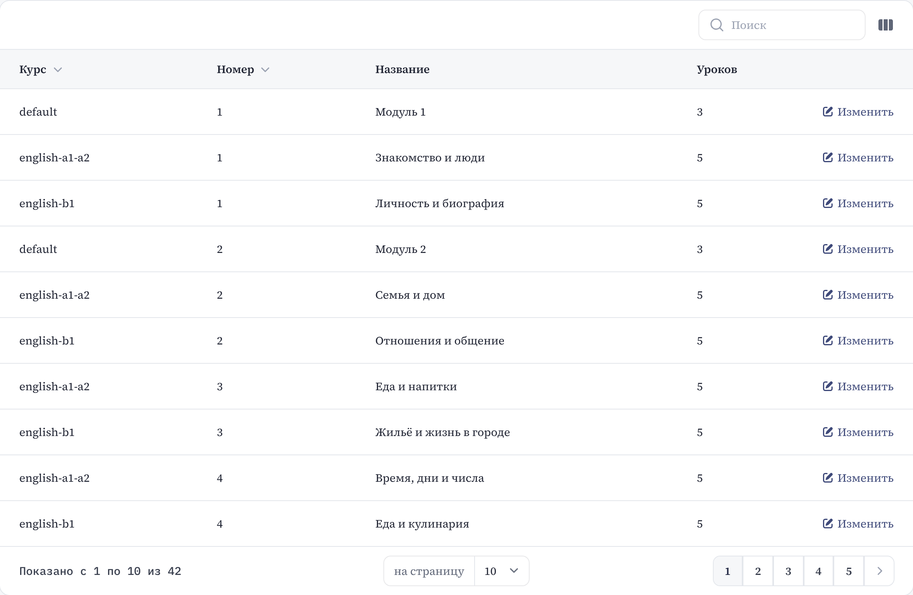
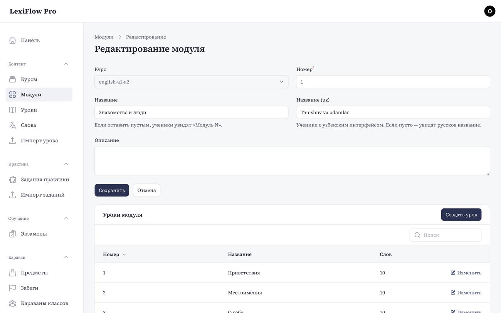
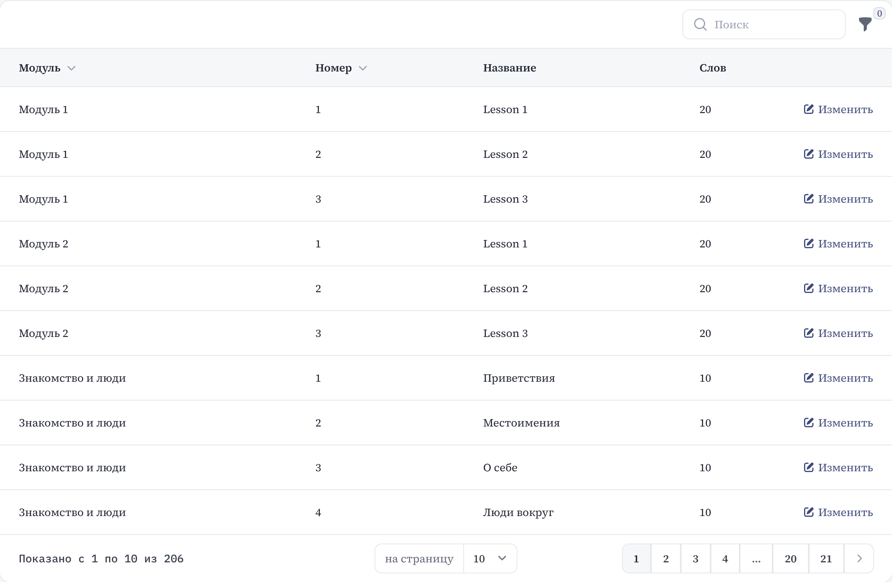
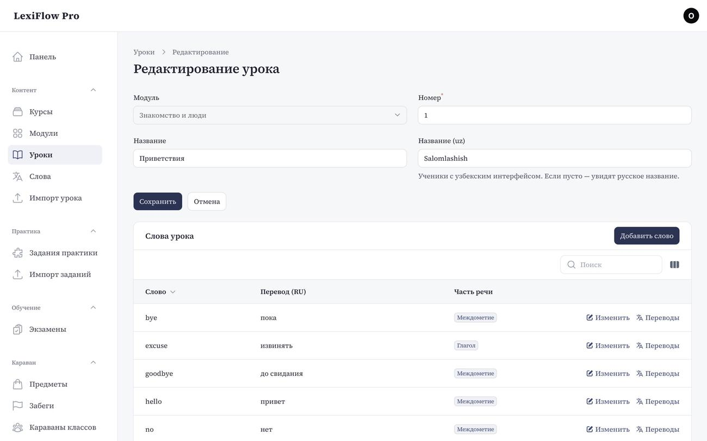
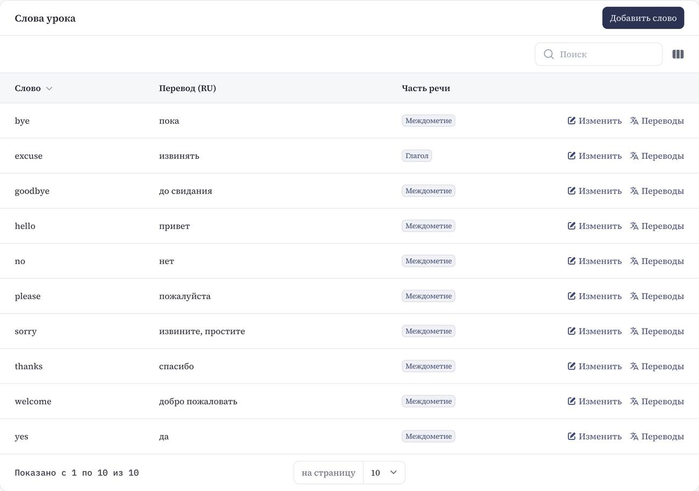
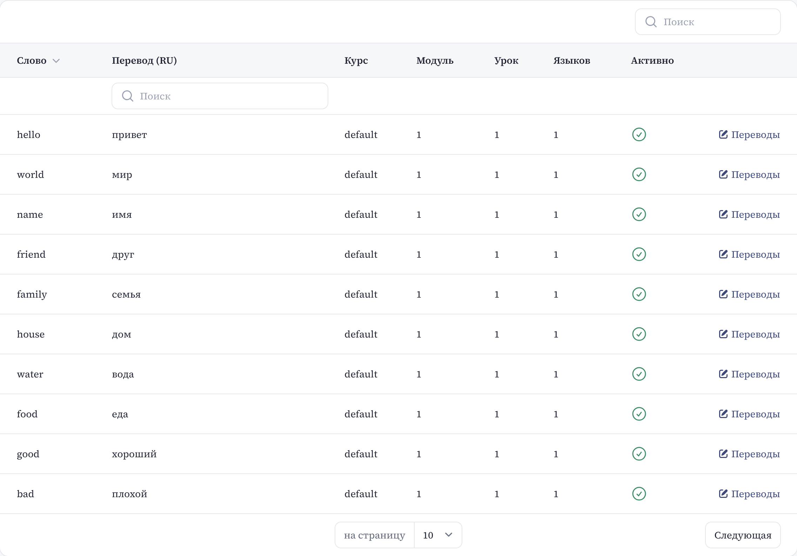
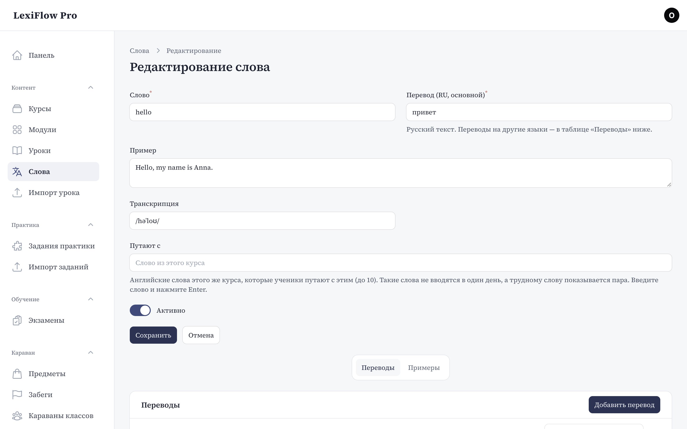
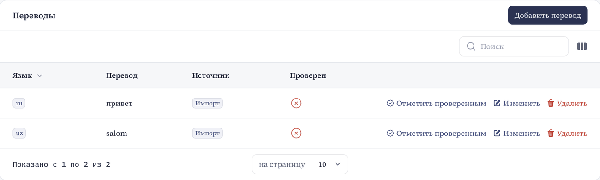

Внутри курса слова разложены по модулям и урокам: курс → модуль → урок → слово. Номера модулей уникальны внутри курса, номера уроков — внутри модуля. Править их может только администратор; учитель видит списки для справки.
Удобнее всего наполнять курс импортом из файла (следующая глава): один файл — один урок со всеми словами и переводами. Ручная правка — для исправлений и мелких добавлений.
Раздел Контент → Модули показывает модули всех курсов: курс, номер, название, число уроков. Модуль можно создать и отсюда (Создать модуль), и со страницы курса.

| Поле модуля | Что вводить |
|---|---|
| Курс | курс, к которому относится модуль |
| Номер | порядковый номер внутри курса; по нему учитель запускает занятия командами бота |
| Название | необязательно. Пустое — ученики увидят «Модуль N» на своём языке |
| Название (uz) | для учеников с узбекским интерфейсом; пусто — увидят русское название |
| Описание | необязательно |
Под формой модуля — таблица Уроки модуля с кнопкой Создать урок.

Раздел Контент → Уроки: модуль, номер, название и число слов. Поиск по названию, фильтр по модулю.

На странице урока — поля Модуль, Номер, Название, Название (uz) и таблица Слова урока. В таблице: Добавить слово, у каждого слова Изменить и Переводы.


Раздел Контент → Слова — все слова платформы с поиском по английскому слову и переводу: слово, русский перевод, курс, модуль, урок, сколько языков переведено и активно ли слово.


| Поле слова | Что вводить |
|---|---|
| Слово | английское слово или выражение. Если изменить текст, старая озвучка сбрасывается и слово ставится на новую озвучку |
| Перевод (RU, основной) | русский перевод. Он же — строка ru в таблице «Переводы»: правка в одном месте меняет и другое |
| Пример | основное предложение с этим словом |
| Транскрипция | необязательно |
| Путают с | английские слова этого же курса, которые ученики путают с этим (до 10). Введите слово и нажмите Enter. Такие слова не дают ученику в один день, а к трудному слову показывают его пару. Слово не из этого курса не принимается |
| Активно | снятый флажок прячет слово: оно не попадает в занятия и экзамены, не считается в числе слов курса и в проверке перед публикацией. Удалить слово нельзя — только выключить |
Вкладка Переводы — по строке на язык: язык, перевод, источник («Импорт» или «Вручную») и отметка «Проверен».

Вкладка Примеры — дополнительные предложения (до 10) с переводами на русский и узбекский. Пока ученик учит слово, он видит только основной пример; когда слово выучено, при каждом повторении показывается другое предложение. Порядок меняется перетаскиванием. Предложение должно содержать само слово — из него делается задание «вставь слово».
Все правки слов сразу попадают в занятия учеников: отдельной «публикации» слова нет. Поэтому крупные изменения в опубликованном курсе лучше делать импортом исправленного файла, а не вручную по одному слову.